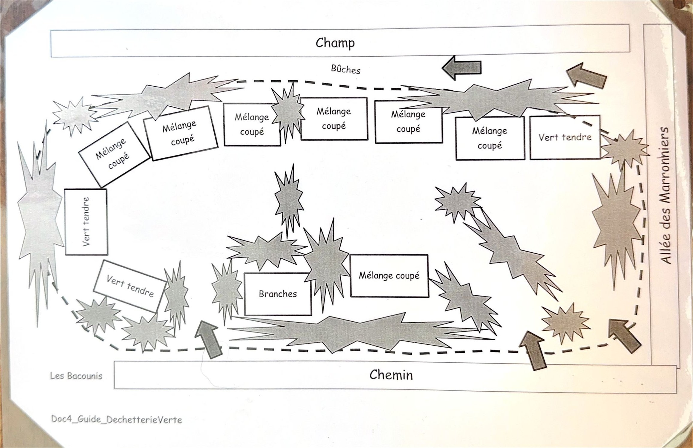

Le principe : il n'y a pas de « déchets verts », mais de la matière organique à valoriser. Chaque type de matière a son tas, parce que chacun se décompose à sa vitesse et sert à autre chose.
Tri Les six types de matière
- 1 · Le tendre
- Fleurs, feuilles, iris, herbe coupée. Décomposition annuelle, donne un compost fin.
- 2 · Mélange coupé semi-tendre
- Petites branches coupées en morceaux de 10 à 15 cm, feuilles, herbe, ronces découpées, lierre… Décomposition en 3 à 4 ans, donne un compost avec des éléments ligneux grossiers qui enrichissent la terre.
- 3 · Bois raméal fractionné (BRF)
- Petites branches en morceaux de 10 à 15 cm, pour épandage au sol après broyage, ou pour constituer de petits fagots d'allumage.
- 4 · Broyat de bois
- Pour épandage sur les plates-bandes. Il retarde la pousse des adventices et protège la terre d'un dessèchement trop rapide. Remplaçable par de la paille ou des feutres naturels.
- 5 · Bois pour bûches
- Troncs et branches, à des fins de récupération énergétique. Pour l'insert : tout type de bois. Pour la cheminée : bois sec non résineux uniquement.
- 6 · Bois mort ou pourri
- Troncs et branches secs, pourris ou en putréfaction. À mettre en fond de massif de permaculture : ils constituent une réserve d'eau et de nutriments sur le long terme.
Plan Où déposer sur le terrain
Les tas sont répartis entre le chemin et le champ, le long de l'allée des Marronniers.

Compost Comment la matière se transforme
La décomposition dépend de la biodiversité, de la finesse du mélange, du temps, de la température, de l'humidité et de la présence d'animaux (mulots, insectes, vers).
- ☀️ La saison chaude est la plus importante : c'est elle qui génère l'activité biologique.
- 🗓️ Il faut au moins une saison chaude par cycle. La matière accumulée l'année N doit mûrir sans nouvel apport l'année N+1, pour être utilisable en N+2.
- 🔄 On peut accélérer le processus en mélangeant ou en tassant régulièrement, ce qui multiplie les contacts entre matières d'origines différentes.
Énergie Brûler le bois correctement
Le brûlage est une oxydation du carbone. Si le bois est humide ou vert, la réaction est incomplète : la chaleur part dans l'évaporation de l'eau et des dépôts inflammables s'accrochent dans le conduit.
- ✅ Dans un insert, la combustion est complète : la chaleur dégagée entretient le processus.
- ⚠️ Dans une cheminée ouverte, ce n'est pas le cas : évitez-y les bois humides, verts et résineux.
- 🌲 La résine des conifères demande plus de chaleur pour bien brûler.